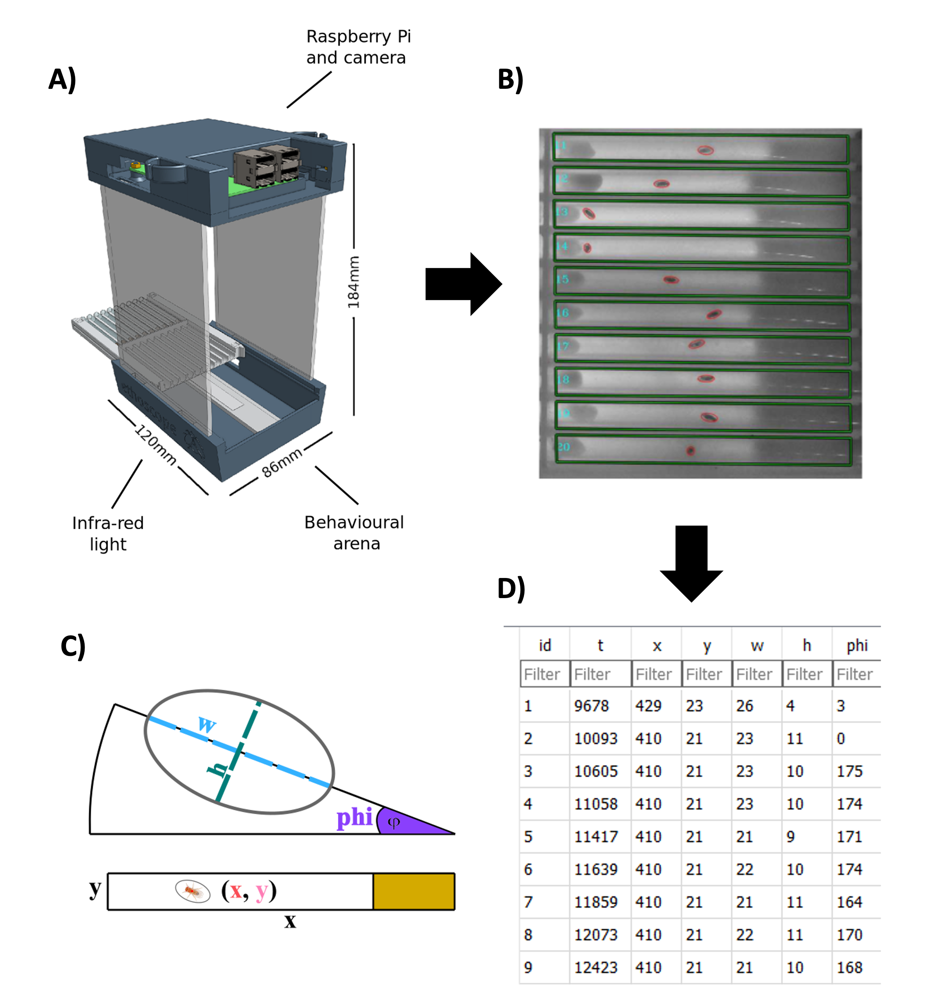
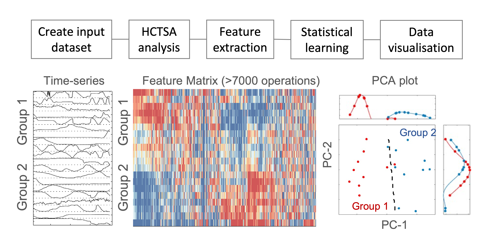

1. Introducion
1.1 Sleep Behaviours in Drosophila Melanogaster
Sleep is an important yet complex physiological process that occurs in virtually every animal that has been studied so far, but its underpinnings and functions remain elusive despite the rapidly developing effort towards sleep analysis. Mammalian sleep is known to be a multistage process with varying sleep depth associated with changes in neuronal activity 123. In humans, for example, electroencephalographic (EEG) recordings can be used to identify the different sleep stages which circulate between wake, light sleep, deep sleep, and rapid eye movement (REM). It is believed that different sleep stages may serve distinct biological functions. For instance, evidence has shown that deep sleep contributes to bodily recovery and growth 4, while REM sleep is essential to cognitive functions such as memory and learning 5.
Definitions
Electroencephalography (EEG) is a method that measures electrical activity in the brain using small, metal discs (electrodes) attached to the scalp (Wikipedia).
A proboscis in insects refers to the tubular mouthpart used for feeding and sucking. Proboscis extension (PE) can either occur spontaneously or in response to antennal stimulation (Wikipedia).
Over the last few decades, the fruit fly Drosophila melanogaster has been an increasingly popular model organism to understand how sleep is regulated by internal and external stimuli and how it affects other biological functions. The simplicity, cost-effectiveness, rapid developmental time, and relevance to human genetics and physiology have made Drosophila an indispensable tool 6. In most current studies, the sleeping state in Drosophila is defined by a simple metric: immobility for more than five minutes 7, and it is often assumed to be homogenous throughout. Nevertheless, there has been increasing evidence that sleep in Drosophila is also a dynamic process with differing sleep intensities 8. Methods including EEG recordings, arousal-testing, and Proboscis Extension (PE) measurements have been used together to show that Drosophila exhibits a deep sleep stage which is characterised by 1) reduced neural activity, 2) increased immobility, 3) increased arousal threshold, and 4) stereotypical PE movement, namely the periodic extensions and retractions of the proboscis 910. These studies also indicated that Drosophila sleep follows a circadian rhythm, where flies sleep the most during start of the night, and it is also under homeostatic control as sleep deprivation leads to increased sleep amount and reduced sleep latency 10.
In this study, we turn to a novel method of measuring Drosophila behaviours using the Ethoscope, developed in the Gilestro lab, which can track the movement of a single fly housed in a glass tube 11. This provides a simple, non-invasive, and high-throughput measurement of the external behaviour of sleep. The aim is to try and identify patterns in Drosophila locomotive data that can infer distinct sleep stages as indicated in previous research.
1.2 The Ethoscope
An ethoscope contains a hardware that video-records the fly in a longitudinal glass tube and a software to track its activity in real-time by applying an oval mask over the fly with machine vision algorithms (Figure 1A & 1B). The software can therefore track the x, y coordinates, width w and height h of the oval mask, and the angle phi between the line of W and the horizontal axis of the tube arena (Figure 1C). This results in five different series of values recorded over time, which are called time series, for each fly (Figure 1D). The ethoscope software also includes algorithms to calculate the maximum velocity and mean velocity at each time point, as well as behavioural annotators to indicate whether the fly is moving, exhibiting micro-movement, or immobile at a given time point.

Figure 1. Fly Behavioural Tracking with Ethoscope. A) Rendered drawing of an Ethoscope device. B) An image from a live Ethoscope showing 10 tubes and the corresponding oval masks over each fly. C) A graphic representation of the oval mask and the variables x, y, w, h and phi of a single fly. D) A screenshot of example outputs of the Ethoscope. t is the time variable.
1.3 Time Series Analysis
As time series data arises in a wide variety of research fields, ranging from stock market forecasting to heart rate variability analysis, numerous tools have been developed to identify patterns in massive, continuous time series data. However, it would be time-consuming and sometimes insufficient to carry out individual analysis and compare simple statistics on the time series data to look for meaningful patterns, especially when little is known about the underlying data structure. As a result, the highly comparative time series analysis (HCTSA) toolkit is implemented to allow automatic data mining for our fly behavioural time series. HCTSA systematically performs over 7,700 statistical analyses, adopted from literatures of different disciplines, on each time series 12. This creates a M x N feature matrix, where M is the number of labelled time series samples and N is the number of statistical operations (also called time series features). Following the massive feature extraction, machine learning tasks such as principal component analysis and classification algorithms can then be performed to quantify similarity between the differently labelled groups (Figure 2).

Figure 2. Highly Comparative Time Series Analysis (HCTSA) workflow. A set of time-series data is labelled and used as input dataset. HCTSA computes over 7,000 operations on each time-series data to create a MxN feature matrix (M = number of timeseries, N = number of operations). After feature extraction, statistical learning tools such as dimensionality reduction and classification algorithms can be used to analyse the data.
In addition to HCTSA, it is also possible to compute a reduced number of operations using Canonical Time-series Characteristics (Catch22), a toolbox that has preselected 22 most representative time-series features from the HCTSA library 13. This significantly decreases the computation time. Therefore, Catch22 is carried out first in every analysis, and HCSTA is performed if the Catch22 yields interesting results.
An advantage of using HCTSA compared to other methods such as deep neutral network on time series classification is that HCTSA encompasses interpretable and well-documented features. This allows useful understanding of the factors that potentially differentiates deep and light sleep in Drosophila. It also provides scope for incorporating a simplistic algorithm to the Ethoscope software that can apply the selected features on newly recorded time series data to indicate sleep stage.
-
Blake H, Gerard RW. Brain potentials during sleep. Am J Physiol-Leg Content. 1937 Jul 31;119(4):692–703. ↩
-
Wolpert EA. A Manual of Standardized Terminology, Techniques and Scoring System for Sleep Stages of Human Subjects. Arch Gen Psychiatry. 1969 Feb 1;20(2):246–7. ↩
-
Webb WB, Agnew HW. Stage 4 sleep: influence of time course variables. Science. 1971 Dec 24;174(4016):1354–6. ↩
-
Yordanova J, Kolev V, Wagner U, Verleger R. Differential associations of early- and late-night sleep with functional brain states promoting insight to abstract task regularity. PloS One. 2010 Feb 26;5(2):e9442. ↩
-
Drago V, Foster PS, Heilman KM, Aricò D, Williamson J, Montagna P, et al. Cyclic alternating pattern in sleep and its relationship to creativity. Sleep Med. 2011 Apr;12(4):361–6. ↩
-
Dissel S. Drosophila as a Model to Study the Relationship Between Sleep, Plasticity, and Memory. Front Physiol [Internet]. 2020 [cited 2022 Jun 6];11. Available from:https://www.frontiersin.org/article/10.3389/fphys.2020.00533 ↩
-
Cirelli C, Bushey D. Sleep and wakefulness in Drosophila melanogaster. Ann N Y Acad Sci. 2008;1129:323–9. ↩
-
Tainton-Heap LAL, Kirszenblat LC, Notaras ET, Grabowska MJ, Jeans R, Feng K, et al. A Paradoxical Kind of Sleep in Drosophila melanogaster. Curr Biol CB. 2021 Feb 8;31(3):578-590.e6. ↩
-
van Alphen B, Yap MHW, Kirszenblat L, Kottler B, van Swinderen B. A Dynamic Deep Sleep Stage in Drosophila. J Neurosci. 2013 Apr 17;33(16):6917–27. ↩
-
van Alphen B, Semenza ER, Yap M, van Swinderen B, Allada R. A deep sleep stage in Drosophila with a functional role in waste clearance. Sci Adv. 2021 Jan 20;7(4):eabc2999. ↩↩
-
Geissmann Q, Rodriguez LG, Beckwith EJ, French AS, Jamasb AR, Gilestro GF. Ethoscopes: An open platform for high-throughput ethomics. PLOS Biol. 2017 Oct 19;15(10):e2003026. ↩
-
Fulcher BD, Jones NS. hctsa : A Computational Framework for Automated Time-Series Phenotyping Using Massive Feature Extraction. Cell Syst. 2017 Nov;5(5):527-531.e3. ↩
-
Lubba CH, Sethi SS, Knaute P, Schultz SR, Fulcher BD, Jones NS. catch22: CAnonical Time-series CHaracteristics. Data Min Knowl Discov. 2019 Nov 1;33(6):1821–52. ↩